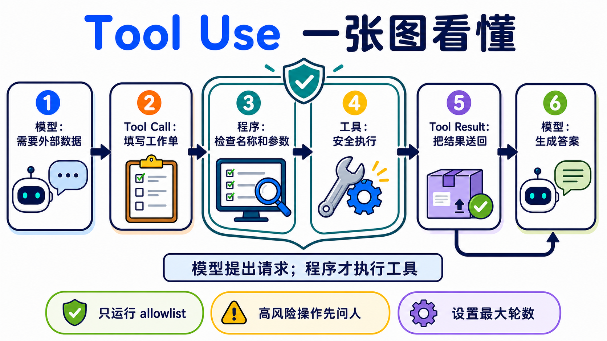

原课程本地核对资料，保留原内容与顺序。外链已改为本地阅读入口。命令中的原仓库路径请按本课运行指南换成实际位置；版本差异见本课说明。MIT © 2026 Wenyu Chiou。
Stage 3 — 工具使用与第一个 Agent Loop ⭐
这一关要做一件事：让模型填写一张“工具工作单”，再由你的程序检查、执行，并把结果送回去。这个来回就是你的第一个 Agent Loop。
云端范例兼容性：现有 Anthropic 范例刻意保留 Haiku 4.5 兼容性基准，不代表最新或最低价模型。改用固定 ID
claude-haiku-5-5前，先按 Haiku 5.5 迁移指南 调整程序，不能只换 model ID：处理默认 adaptive thinking（自适应思考）、按type == "text"提取文字、移除temperature／top_p／top_k，并重新计算 tokens、输出上限与预算。工具循环须原样保留 thinking 区块并只追加历史；离线测试通过不代表已验证真实模型质量。
📌 学习目标
完成后，你可以：
- 说出
schema → call → execute → result → answer五个步骤。 - 定义一个工具，检查参数，再安全地执行对应函数。
- 不靠 framework，写出有次数上限和停止条件的 Agent Loop。
- 分清 Function Calling 与 Structured Output，不再把两者当成同一件事。
- 用固定题目比较 schema 或模型，而不是靠一次结果下结论。
🚪 进入条件
你能运行一个 Python 文件、看懂 function 与 dict，并完成 Stage 02，就可以开始。环境还没准备好时，先回 Stage 00。
🧩 先认识八个核心词
Tool Use（工具使用）
模型需要外部资料或动作时，会先提出工具请求。就像孩子请大人帮忙打开高处的盒子：模型提出要做什么，程序才真正动手。本章用它查天气和做计算。模型本身不会执行你的 client tool。
Function Calling（函数调用）
模型按照约定格式，返回要调用的函数名称与参数。就像填写一张有固定栏位的工作单。本章用它把自然语言问题变成程序能读取的请求。不同供应商的消息格式不完全相同。
Tool Schema（工具纲要）
JSON（JavaScript Object Notation） 是程序交换数据的文本格式。
Schema 是工具的说明卡：名称、用途、可填栏位和数据类型。就像菜单告诉客人能点什么。本章会用 JSON Schema 描述工具。Schema 能约束外形，但程序仍要验证数值、权限和业务规则。
Tool Call（工具请求）
Tool Call 是模型填好的工作单，包含工具名称、call ID 和参数。比如“请查台北，单位用摄氏”。本章的程序会先读取它，再从 allowlist 找到合法函数。它是请求，不是执行结果。
Tool Result（工具结果）
Tool Result 是程序做完事情后交回的数据，并用 call ID 对回原请求。就像厨房把做好的餐点放回正确桌号。本章会把成功或错误结果送回模型。外部结果可能不可信，不能把它当成最高优先级指令。
Agent Loop（Agent 执行循环）
程序重复“询问模型 → 执行工具 → 返回结果”，直到得到答案或碰到上限。就像照食谱一步一步做，完成就停。完整来回是 model → tool call → execute → tool result → model。本章的 working definition 是 模型 + 工具 + 有界循环；这是学习用定义，不是所有 Agent 的唯一学术定义。
ReAct（Reasoning + Acting）
ReAct 会交替决定下一步、采取 action、查看 observation，再继续。就像找钥匙时先看桌上，没看到再查抽屉。本章写的是 ReAct-inspired 的可观察工具循环；不要求模型公开私有 Chain-of-Thought。
Structured Output（结构化输出）
模型直接返回固定形状的数据，例如符合 schema 的 JSON。就像把答案填进表格。本章用它和 Function Calling 对照：前者要数据，后者要程序采取动作。即使外形合法，内容仍可能错误、被拒答或被截断。

先选对方法
| 你要什么 | 先用什么 | 例子 |
|---|---|---|
| 只要文字答案 | 一般模型回答 | 改写一封信 |
| 要固定形状的数据 | Structured Output | 抽取姓名与日期 |
| 要查实时数据或采取动作 | Function Calling / Tool Use | 查天气、建立工单 |
⚠️ 写第一个 Agent 前的五条底线
- 只执行 allowlist 里的工具，不用模型输出的名称做任意函数调用。
- 把工具参数当成不可信输入；先检查类型、范围和权限。
- 工具只拿完成任务需要的最小权限。
- 删除、付款、发邮件等高风险动作，执行前要让人确认。
- 设置最大轮数、timeout 和费用上限；不能让 Agent 无限绕圈。
📚 必修阅读
按顺序阅读：
- Ollama Tool Calling ⭐⭐⭐⭐⭐ — 先看 single tool 与 multi-turn loop。
- Anthropic — How Tool Use Works ⭐⭐⭐⭐⭐ — 看清模型、应用程序和 tool result 各自负责什么。
- ReAct paper ⭐⭐⭐⭐ — 先读 abstract；了解 Reasoning + Acting 的来源，不必一次读完所有公式。
展开前置知识、环境、时间与预算
前置知识：能运行 Python、看懂 list／dict／function，并完成 Stage 02。
本地主路径：Ollama + qwen2.5:3b。这是根据用户安装情况验证后保留的入门模型，不代表它在每个 schema 上都最好。
ollama pull qwen2.5:3b
ollama serve
python -m pip install "openai>=3.3,<4"
云端比较路径：Anthropic + pinned Haiku model ID。
$env:ANTHROPIC_API_KEY="贴上你的密钥"
python -m pip install "anthropic>=1.0,<2"
macOS／Linux 的设置方式是 export ANTHROPIC_API_KEY="贴上你的密钥"。不要把密钥写进程序或 commit。
时间：先跑练习 1–3 约 2–3 小时；练习 4–6 约 3–5 小时；完整 active path 约 5–8 小时。
费用计算方式：
费用 = 输入 tokens ÷ 1,000,000 × input price
+ 输出 tokens ÷ 1,000,000 × output price
2026-08-27 查核时，Claude Haiku 4.5 是 $1 / $5（input / output，每百万 tokens）。如果一次请求使用 2,000 input + 1,000 output，示例费用约 $0.007。工具循环会发送多次请求；每题先预留 $0.05，全章五轮实验先设置 $1 provider spend limit。这是保守上限，不是账单保证。
Path A 的 API 费用是 $0；仍会使用你的硬件、内存与电力。
Agent 的经典范式（thinking patterns）
展开 CoT、ReAct、Reflection 与 Planning 的差别
| 名称 | 白话用途 | 在哪里学 |
|---|---|---|
| Chain-of-Thought（CoT） | 早期 prompt 技巧常要求写出中间推理。现在不把完整私有思维链当成通用输出要求；需要检查时，看最终答案与简短、可验证的理由 | Stage 02 |
| ReAct | 在循环中交替采取 action、读 observation，再决定下一步 | 本章练习 3 |
| Reflection | 用一轮反馈改进下一次尝试的广义做法 | 本章下方路由 |
| Reflexion／Self-Refine | 有明确 Actor／Critic 或自我反馈流程的研究 pattern | 本章概念；持久记忆版见 Stage 06 |
| Planning | 先拆成多步，再根据结果调整计划 | Stage 07.5 |
这些词描述不同的解题方式，不是判断 Agent 的唯一标准。Computer-use、CodeAct 和 workflow agent 也可能使用不同的 loop。
🛠 动手练习
先完成练习 1–3。练习 4–6 用来让循环更稳，不需要一天全部做完。
练习 1：Function Calling（一个工具、一次调用）
完成后，你会看到模型先生成 get_weather Tool Call，程序执行它，再由模型用 Tool Result 回答。
如果你偏好使用文件实现，可以打开练习 1 完整文件夹。
第一步：复制并运行 ollama pull qwen2.5:3b。接着展开 Path A，把完整程序直接复制成 hello_tool.py。
Path A：Ollama 完整可复制示例（API 费用 $0）
import json
from openai import OpenAI
client = OpenAI(base_url="http://localhost:11434/v1", api_key="ollama")
TOOLS = [{
"type": "function",
"function": {
"name": "get_weather",
"description": "获取指定城市的示例天气数据",
"parameters": {
"type": "object",
"properties": {
"city": {"type": "string", "description": "城市名称，例如台北"},
"unit": {"type": "string", "enum": ["celsius"]},
},
"required": ["city", "unit"],
"additionalProperties": False,
},
},
}]
def get_weather(city: str, unit: str) -> dict:
if unit != "celsius":
raise ValueError("只接受 celsius")
return {"city": city, "temperature": 26, "unit": unit}
messages = [{"role": "user", "content": "台北现在几度？"}]
first = client.chat.completions.create(
model="qwen2.5:3b", messages=messages, tools=TOOLS
)
assistant = first.choices[0].message
messages.append(assistant.model_dump(exclude_none=True))
for call in assistant.tool_calls or []:
if call.function.name != "get_weather":
raise ValueError(f"不允许的工具：{call.function.name}")
args = json.loads(call.function.arguments)
if (
not isinstance(args, dict)
or set(args) != {"city", "unit"}
or not isinstance(args["city"], str)
or not args["city"].strip()
or args["unit"] != "celsius"
):
raise ValueError("city 必须是非空字符串，unit 必须是 celsius")
result = get_weather(args["city"], args["unit"])
messages.append({
"role": "tool",
"tool_call_id": call.id,
"content": json.dumps(result, ensure_ascii=False),
})
if not assistant.tool_calls:
raise RuntimeError("模型没有调用工具；请检查模型与 schema")
final = client.chat.completions.create(
model="qwen2.5:3b", messages=messages, tools=TOOLS
)
print(final.choices[0].message.content)
assert assistant.tool_calls[0].function.name == "get_weather"
assert any(message["role"] == "tool" for message in messages)
python hello_tool.py
这里使用的是 连接到 Ollama compatible Chat Completions endpoint 的 OpenAI Python SDK，数据不会发送到 OpenAI 云端。additionalProperties: false 对 schema 很有帮助，但 Ollama 与 OpenAI strict mode 的保证不能画等号；程序仍要验证。
如果模型没有调用工具，先保持问题、模型和 schema 不变，重跑三次并记录成功次数；不要只凭一次失败就宣布模型“不支持”。
Path B：Anthropic 完整来回（每次先预留 $0.05）
import json
import os
import anthropic
client = anthropic.Anthropic(api_key=os.environ["ANTHROPIC_API_KEY"])
tools = [{
"name": "get_weather",
"description": "获取指定城市的示例天气数据",
"input_schema": {
"type": "object",
"properties": {"city": {"type": "string"}},
"required": ["city"],
"additionalProperties": False,
},
}]
def get_weather(city: str) -> dict:
return {"city": city, "temperature": 26, "unit": "celsius"}
messages = [{"role": "user", "content": "台北现在几度？"}]
first = client.messages.create(
model="claude-haiku-4-5-20251001",
max_tokens=512,
tools=tools,
messages=messages,
)
messages.append({"role": "assistant", "content": first.content})
tool_results = []
for block in first.content:
if block.type == "tool_use":
if block.name != "get_weather":
raise ValueError(f"不允许的工具：{block.name}")
if (
set(block.input) != {"city"}
or not isinstance(block.input["city"], str)
or not block.input["city"].strip()
):
raise ValueError("get_weather 需要一个字符串 city")
result = get_weather(block.input["city"])
tool_results.append({
"type": "tool_result",
"tool_use_id": block.id,
"content": json.dumps(result, ensure_ascii=False),
})
if not tool_results:
raise RuntimeError(f"没有工具请求；stop_reason={first.stop_reason}")
messages.append({"role": "user", "content": tool_results})
final = client.messages.create(
model="claude-haiku-4-5-20251001",
max_tokens=512,
tools=tools,
messages=messages,
)
print("\n".join(block.text for block in final.content if block.type == "text"))
Anthropic client tool 的失败结果要使用对应的 tool_use_id，并加上 "is_error": true。不要把工具结果插入 system prompt。
练习 2：多工具选择
完成后，模型会在 calculator 和 get_weather 中选择一个，程序只派发 allowlist 内的名称。
第一步：直接复制这一行运行 mock test，不需要密钥：
python examples/stage-3/02-multi-tool-selection/test.py
展开 Path A／Path B、观察重点与预算
- Path A README（Ollama）：运行
python starter.py。 - 同一文件夹的
starter_anthropic.py是 Path B；运行python test_anthropic.py，先用 mock 验证消息形状。 - 观察
tool_calls[0].function.name，再确认程序会拒绝未知名称。 - 不要使用
globals()[model_name]()或eval()派发工具。
Path A 的 API 费用是 $0；Path B 一轮先预留 $0.05。
结构化输出（Structured Outputs / JSON mode）⭐ function calling 的孪生兄弟
Function Calling 是“请程序做事”；Structured Output 是“请模型把数据放进固定形状”。两者都使用 schema，但目的不同。
展开 strict mode、JSON mode 与常见限制
- JSON mode 通常只保证可以解析成 JSON，不一定符合你的栏位规则。
- Structured Output 会在供应商支持的限制内约束 schema 外形；仍可能遇到 refusal、截断或语义错误。
- OpenAI strict mode 要求每个 object 设置
additionalProperties: false，并把 properties 全部列为 required；Chat Completions 默认仍不是 strict。 - Anthropic strict tool use 的 schema 格式、消息格式与 OpenAI 不同，不要直接复制旗标名称。
- Ollama／其他 compatible endpoint 的支持范围取决于模型与版本。用固定 eval 验证，不要从“compatible”推断完全相同。
想用 Python model 管理 schema，可以看 567-labs/instructor；想研究 constrained decoding，可以看 dottxt-ai/outlines。无论使用哪一个，程序都要处理解析和语义错误。
练习 3：从零实现 ReAct（不用 framework）
完成后，你会有一个最小 Agent Loop：模型可以多次调用工具，但超过上限一定停止。
第一步：先运行不需要密钥的测试：
python examples/stage-3/03-react-from-scratch/test.py
展开 13 行 loop、双路径与完成条件
for step in range(MAX_STEPS):
response = ask_model(messages, tools)
calls = read_tool_calls(response)
if not calls:
return read_final_text(response)
for call in calls:
name, args, call_id = validate_call(call)
result = TOOL_IMPL[name](**args)
messages.append(make_tool_result(call_id, result))
raise RuntimeError(f"Agent 超过 {MAX_STEPS} 步，已停止")
真正的程序还要把 assistant 的 Tool Call 放回 history，并处理 refusal、max tokens、timeout、未知工具、JSON 解析与工具异常。完整双路径在 03-react-from-scratch。
把 trace 记成 action / observation / final 或简短可验证摘要即可；不要把私有 Chain-of-Thought 当成 log 契约。
Path A 的 API 费用是 $0；Path B 一次 loop 先预留 $0.05。完成条件：测试能证明“没有 tool call 就停止”与“超过 MAX_STEPS 会报错”。
练习 4：多步骤推理任务
完成后，同一个 loop 会先查资料、再计算，并且每一步都有对应的 call ID 和结果。
第一步：复制测试命令：
python examples/stage-3/04-multi-step-reasoning/test.py
展开任务、比较方法与预算
任务示例：“查台北温度，再换算成华氏。”工具分成 get_weather 与 celsius_to_fahrenheit。不要把两个步骤偷偷合成一个假工具；本题要观察模型是否会接着使用前一个结果。
完整双路径在 04-multi-step-reasoning。比较模型时，固定 prompt、tools、schema、MAX_STEPS 和测试题，至少重跑五次，再记录成功率与失败类型。
Path A 的 API 费用是 $0；Path B 多轮请求先预留 $0.10。更大的模型可能更稳定，也可能只是更贵；用 eval 决定。
练习 5：错误处理
完成后，程序会把“可以让模型修正的工具错误”送回去，同时对 transport、解析或超出上限的错误明确停止。
第一步：先运行两条 mock test：
python examples/stage-3/05-error-handling/test.py
python examples/stage-3/05-error-handling/test_anthropic.py
展开错误分类、bounded retry 与预算
| 错误 | 程序先做什么 | 是否送回模型 |
|---|---|---|
| 网络 timeout／rate limit | 有上限地 retry；记录错误 | 通常先不要 |
| Tool Call JSON 解析失败 | 不执行工具；回报格式错误 | 可以，用 error result |
| 未知工具／未授权参数 | 拒绝执行；留下 audit log | 可以，但不能放宽权限 |
| 工具查无数据 | 返回明确、最小的语义错误 | 可以，让模型改查询或放弃 |
达到 MAX_STEPS／费用上限 |
立即停止 | 不再 retry |
Anthropic 的失败 tool_result 使用 "is_error": true。OpenAI-compatible 路径可以在 role: tool 的 content 中放结构化错误，但应用程序仍要自己限制 retry。
完整双路径在 05-error-handling。Path A 的 API 费用是 $0；Path B 一轮错误恢复先预留 $0.10。
练习 6：Function schema 设计（坏 schema 修到好）
完成后，你会用同一组题目比较两个 schema，并指出描述、栏位、enum 或限制哪里得到改善。
第一步：直接运行坏版和好版的 mock test：
python examples/stage-3/06-schema-design/test.py
python examples/stage-3/06-schema-design/test_anthropic.py
展开五条规则、eval 卡与预算
- 工具名称用清楚的动词加名词，例如
get_weather。 - Description 说明何时使用，也说明何时不要使用。
- 每个栏位都有清楚的名称、类型与示例。
- 能用
enum、范围和additionalProperties: false就明确限制。 - Schema 只负责接口；权限、业务规则和数据安全仍由程序验证。
完整双路径在 06-schema-design，速查表在 resources/schema-design-cheatsheet.zh-Hans.md。
直接复制这张结果卡，不必先画空表：
固定题目：________________
坏 schema｜成功 __ / 5｜主要错误：________________
好 schema｜成功 __ / 5｜主要改善：________________
结论｜哪个栏位帮助最大：________________
不要写“某模型几乎必错”。Path A 的 API 费用是 $0；Path B 五轮比较先预留 $0.25。
🎒 推荐小项目：安全的天气小助手
把练习 1–6 接起来，只保留两个只读工具：get_weather 和 convert_temperature。加入 allowlist、参数验证、MAX_STEPS、timeout、错误结果和五题 eval。
最小成果是 agent.py、test_agent.py、eval_cases.json 和一张结果卡。先让 mock tests 通过，再运行本地模型；不要先接付款、删档或发邮件工具。
🪞 反思（Reflexion / Self-Refine）— 概念 + 路由
展开 Reflection、Reflexion、Self-Refine 与记忆的关系
- Reflection 是广义名称：查看上一轮结果，再改进下一轮。
- Reflexion 常把失败、反馈与下一次策略写进可重复使用的文字记录。
- Self-Refine 常用“生成 → 批评 → 重写”循环改善同一份输出。
- 这些都是 ReAct 的 sibling patterns，不等于 Tool Use，也不一定需要持久记忆。
本章只理解 single-session loop。需要跨 session 保存失败经验时，进入 Stage 06 的 Reflection Memory；需要更完整的 planning、verification 与长时间执行时，进入 Stage 07.5。
🎯 精选 Projects
先完成一条五星路线：官方文档 → 练习 1–3 → 一个从零实现。完整表格是工具箱，不是 21 条待办清单。
资源核查：2026-08-27 UTC
推荐度是本 Stage 的学习优先顺序，不是人气排名：
⭐⭐⭐⭐⭐＝跳过会卡住本章路线；⭐⭐⭐⭐＝建议优先；⭐⭐⭐＝有需要再看；⭐⭐＝历史或少数情境。
| 分类 | 资源 | 先做什么 | 状态／授权 | 推荐度 |
|---|---|---|---|---|
| 官方核心文档 | Anthropic — How Tool Use Works | 先看 client tool 的五步来回。 | 官方文档 | ⭐⭐⭐⭐⭐ |
| Anthropic — Handle Tool Calls | 查看 call ID、result 与 is_error。 | 官方文档 | ⭐⭐⭐⭐⭐ | |
| Ollama — Tool Calling | 照 single tool 和 agent loop 示例跑一次。 | 官方文档 | ⭐⭐⭐⭐⭐ | |
| OpenAI — Function Calling | 比较 function schema 与 strict mode。 | 官方文档 | ⭐⭐⭐⭐ | |
| Google Gemini — Function Calling | 需要 Gemini 时比较 sequential／parallel call。 | 官方文档 | ⭐⭐⭐ | |
| ReAct paper | 先读 abstract 与方法图。 | 原始论文；arXiv | ⭐⭐⭐⭐ | |
| 官方课程与示例 | Anthropic Courses — Tool Use | 阅读旧版 Tool Use notebook；动手时对照下一行 Cookbook。 | 已归档的官方课程；上游未提供 SPDX | ⭐⭐⭐⭐ |
| Anthropic Tool Use Cookbook | 从单工具读到并行工具。 | 维护中；MIT | ⭐⭐⭐⭐⭐ | |
| Anthropic Quickstarts | 练习后看完整应用如何连接工具。 | 维护中；MIT | ⭐⭐⭐⭐ | |
| Microsoft AI Agents for Beginners | 需要另一条完整课程时选读一章。 | 维护中；MIT | ⭐⭐⭐⭐ | |
| 从零实现 | ai-agents-from-scratch | 用 Ollama 对照练习 3 的 loop。 | 维护中；MIT | ⭐⭐⭐⭐⭐ |
| react-from-scratch | 需要 Gemini／Reflection 变体时再看。 | 更新放缓（最后 push 2025-05）；Apache-2.0 | ⭐⭐⭐ | |
| agent-implementation | 只用来逐行看最小教学玩具。 | 历史参考（最后 push 2024-01）；上游未提供 SPDX | ⭐⭐ | |
| GenericAgent | 想看小型 framework 时再比较。 | 维护中；MIT | ⭐⭐⭐ | |
| Framework／CodeAct 对照 | Hugging Face Smolagents | 完成 JSON-tool loop 后比较 CodeAct。 | 维护中；Apache-2.0 | ⭐⭐⭐⭐ |
| QuantaLogic | 需要第二个 CodeAct 实现时再看。 | 更新较慢（最后 push 2025-12）；Apache-2.0 | ⭐⭐⭐ | |
| LangChain ReAct Agent | 看 framework 如何包住自己写过的 loop。 | 维护中；MIT | ⭐⭐⭐ | |
| 中文章节式教材 | hello-agents | 需要完整中文章节时走这条主线。 | 维护中；上游 metadata 未提供 SPDX | ⭐⭐⭐⭐⭐ |
| HelloAgents | 配合上面教材运行程序；先确认对应分支。 | 维护中；上游 metadata 未提供 SPDX | ⭐⭐⭐⭐⭐ | |
| Structured Output 工具 | instructor | 想使用 typed model、验证与 retry 时看。 | 原 jxnl/instructor 已转址；MIT | ⭐⭐⭐⭐ |
| outlines | 研究本地 constrained decoding 时看。 | 维护中；Apache-2.0 | ⭐⭐⭐⭐ |
✅ 进 Stage 4 前的自我检查
- [ ] 我能用自己的话说出
schema → call → execute → result → answer。 - [ ] 我能分清 Tool Call、Tool Result 与 Structured Output。
- [ ] 我的程序只派发 allowlist 工具，会验证参数，也有
MAX_STEPS。 - [ ] 我跑过练习 1–3，并看过至少一次成功和一次错误路径。
- [ ] 我比较模型或 schema 时使用同一组题目与明确分数。
都做到后，进入 Stage 4 — Workflow Graph 与 Agent 框架。如果还说不出完整来回，先重跑练习 1；不需要把整章重新读一遍。